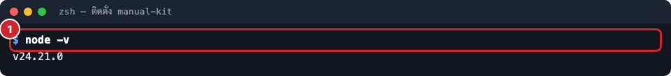
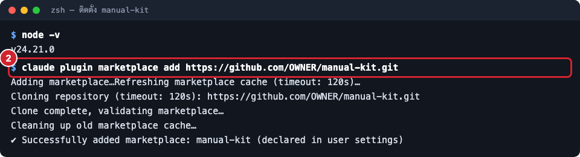
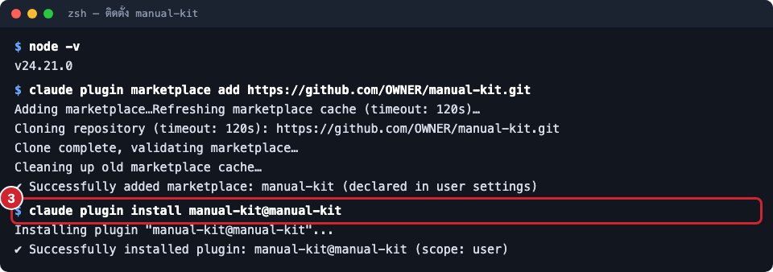
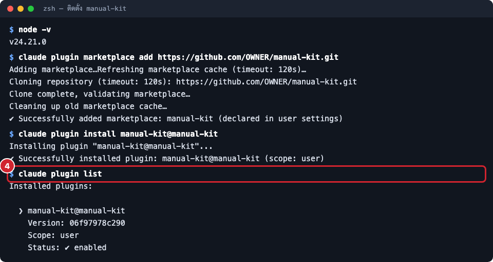
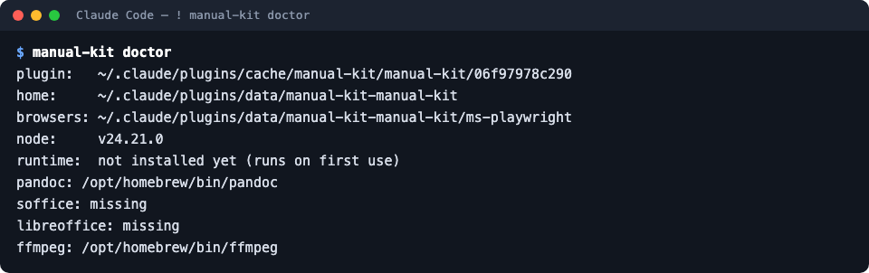

ติดตั้ง plugin
ติดตั้ง manual-kit เข้า Claude Code ด้วยสองคำสั่ง ครั้งเดียวต่อเครื่อง ราว 3 นาที
- สำหรับ
- ทีมที่ทำคู่มือ
- ใช้เวลา
- 3 นาที
- ทำครั้งเดียวต่อเครื่อง
- ใช่
manual-kit มาเป็น plugin ของ Claude Code repo ของ manual-kit ทำหน้าที่เป็น "ร้าน" (marketplace)
ชื่อ manual-kit ที่มี plugin ชื่อ manual-kit อยู่ข้างใน เราจึงเพิ่มร้านก่อน แล้วค่อยติดตั้ง plugin จากร้านนั้น
ทำครั้งเดียวต่อเครื่อง ใช้ได้กับทุกโครงการ
ก่อนเริ่ม
- Claude Code ติดตั้งแล้ว (เปิดด้วยคำสั่ง
claudeได้) - Node.js 22.17 ขึ้นไป ตรวจด้วย
node -vถ้าต่ำกว่านี้ manual-kit จะแจ้งว่าmanual-kit: Node.js 22.17 or newer is needed(macOS อัปเดตด้วยbrew upgrade node) - ไม่บังคับ:
pandoc(ทำไฟล์ Word),ffmpeg(ทำวิดีโอ), LibreOffice (ใส่เลขหน้าในสารบัญของไฟล์ Word) ไม่ต้องติดตั้งตอนนี้ Claude จะถามก่อนเมื่องานที่สั่งต้องใช้
ขั้นตอน
- เปิด terminal แล้วเพิ่ม marketplace ของ manual-kit
- ติดตั้ง plugin จาก marketplace นั้น
- ตรวจว่าติดตั้งแล้วด้วย
claude plugin list
claude plugin marketplace add https://github.com/nathawat/manual-kit.git
claude plugin install manual-kit@manual-kit
ภาพด้านล่างเป็นตัวอย่างผลการติดตั้ง:
ตรวจรุ่น Node ต้องเป็น 22.17 ขึ้นไป

ตรวจรุ่น Node ต้องเป็น 22.17 ขึ้นไป เพิ่ม marketplace ของ manual-kit ได้ marketplace ชื่อ manual-kit

เพิ่ม marketplace ของ manual-kit ได้ marketplace ชื่อ manual-kit ติดตั้ง plugin manual-kit จาก marketplace นั้น

ติดตั้ง plugin manual-kit จาก marketplace นั้น ตรวจว่า plugin ติดตั้งและเปิดใช้แล้ว

ตรวจว่า plugin ติดตั้งและเปิดใช้แล้ว
- เปิด Claude Code ใหม่ในโฟลเดอร์โครงการ ครั้งแรกที่เปิด plugin จะติดตั้งเครื่องมือที่ต้องใช้เองในเบื้องหลัง
(เบราว์เซอร์ Chromium สำหรับถ่ายภาพและแพ็กเกจอีกสามตัว) ใช้เวลา 2–3 นาที ไม่ต้องรัน npm หรือ pnpm เอง
ถ้าต้องการสั่งติดตั้งทันที พิมพ์ใน Claude Code ว่า
! manual-kit setup(คำสั่ง setup)
ผลลัพธ์ที่ได้
claude plugin list แสดง manual-kit@manual-kit สถานะ enabled และใน Claude Code พิมพ์ /manual แล้วเห็นคำสั่ง
ถ้าต้องการดูว่าเครื่องพร้อมแค่ไหน พิมพ์ ! manual-kit doctor (คำสั่ง doctor) จะบอกที่อยู่ของ plugin
โฟลเดอร์ข้อมูล รุ่น Node และโปรแกรมเสริมที่มีหรือขาด:

บรรทัด runtime: not installed yet แปลว่ายังไม่ได้ใช้ครั้งแรก ไม่ใช่ข้อผิดพลาด ส่วน soffice: missing แปลว่าไม่มี LibreOffice
ไฟล์ Word จะยังทำได้ แต่สารบัญจะยังไม่มีเลขหน้าจนกว่าจะเปิดใน Word แล้วอัปเดต
ปัญหาที่พบบ่อย
| อาการ | สาเหตุ | วิธีแก้ |
|---|---|---|
marketplace add ไม่ผ่าน (permission denied) |
ยังไม่มีสิทธิ์ repo หรือ ssh key ยังไม่อยู่ใน GitLab | ขอสิทธิ์จากหัวหน้าทีม ใส่ ssh key แล้วลองใหม่ |
/manual ไม่ขึ้น |
Claude Code ยังไม่โหลด plugin ใหม่ หรือชื่อสั้นชนกับคำสั่งอื่น | เปิด Claude Code ใหม่ หรือใช้ชื่อเต็ม /manual-kit:manual |
| ใช้ครั้งแรกช้า | กำลังติดตั้ง Chromium และแพ็กเกจ | รอ 2–3 นาที เกิดครั้งเดียว |